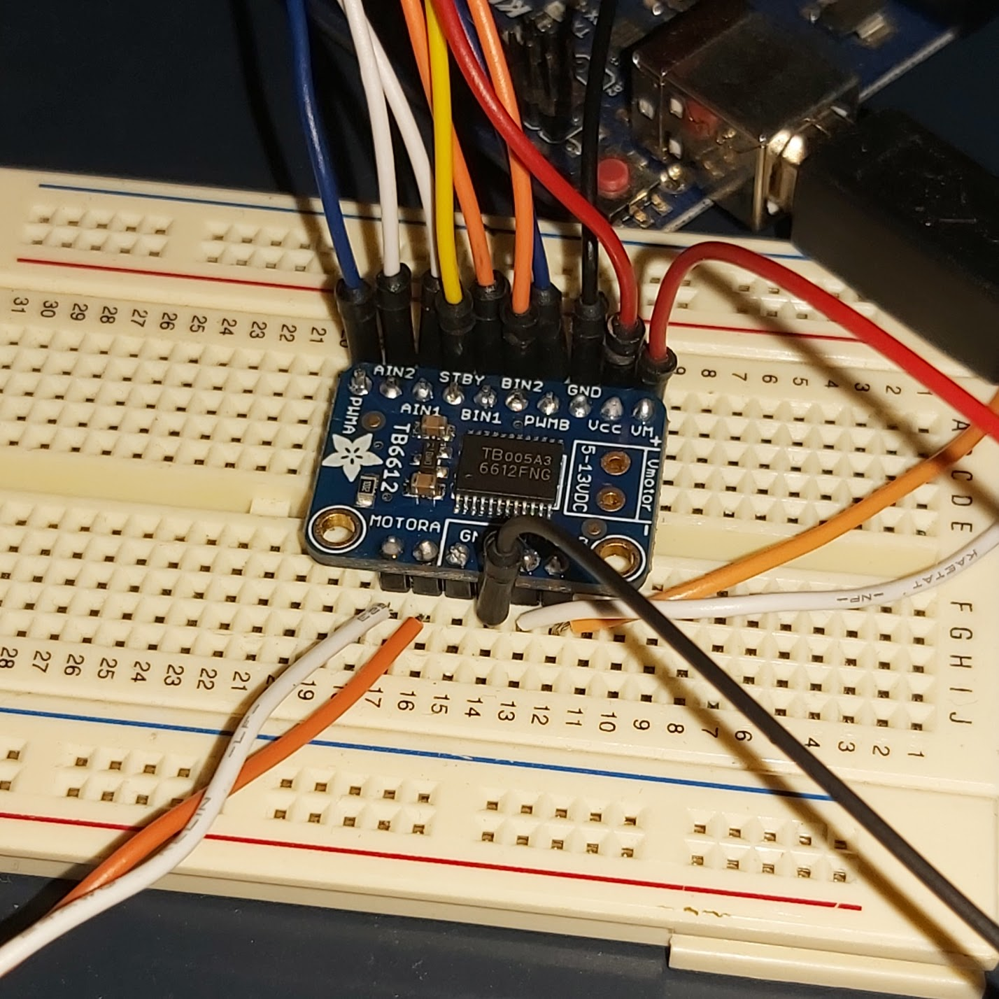
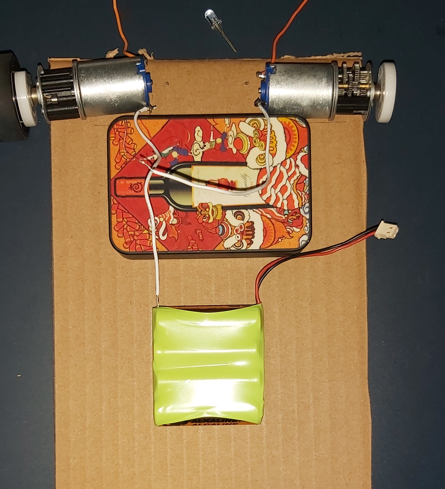
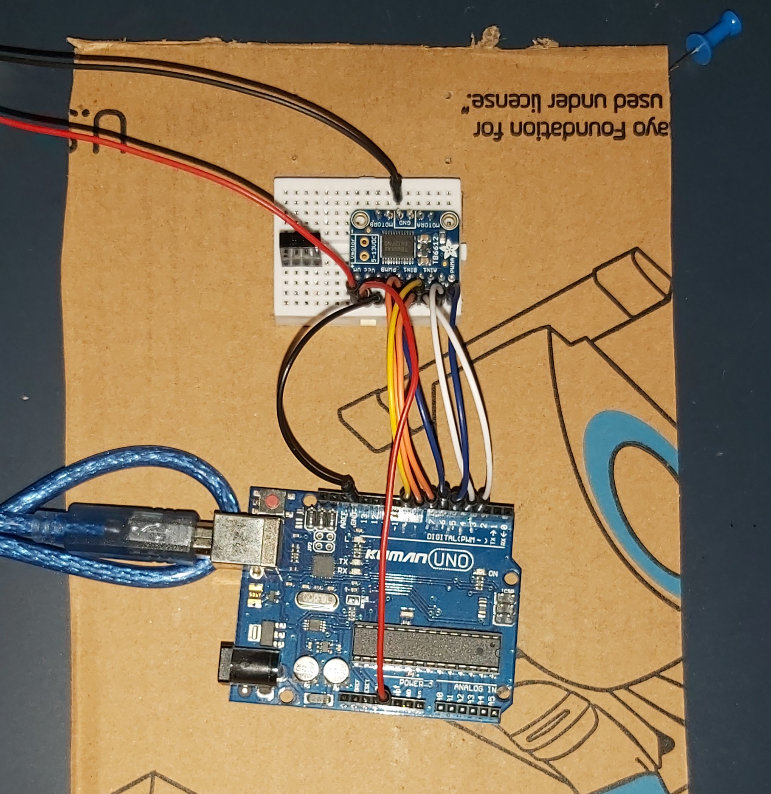
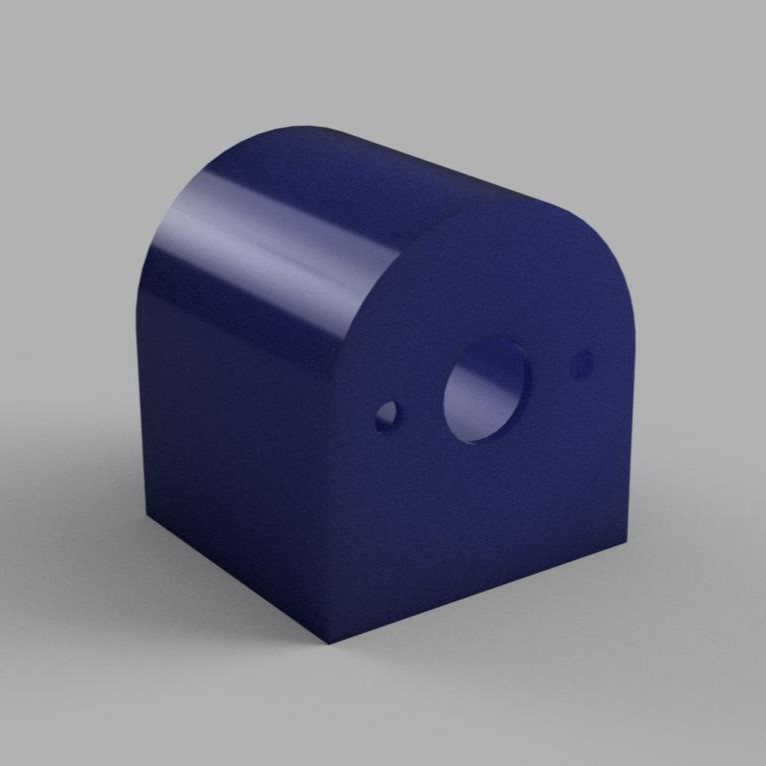
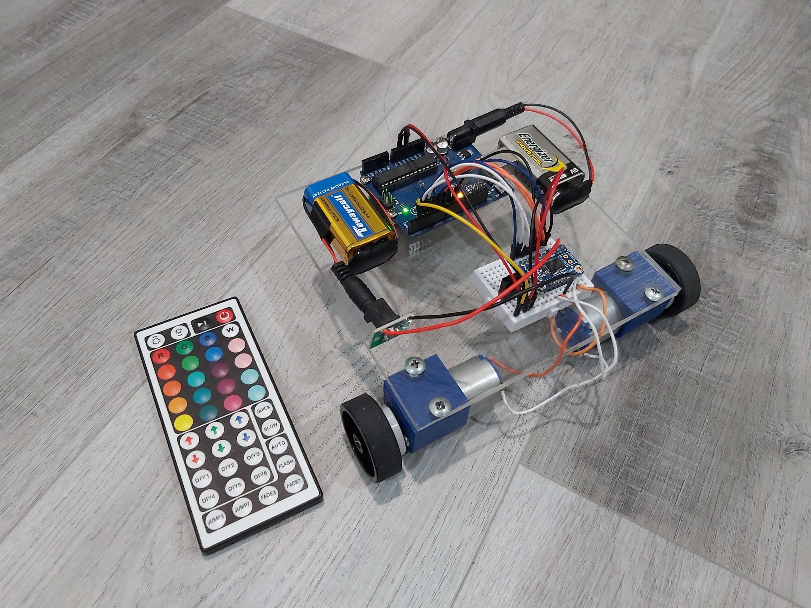

2 Wheel Robot
This was the first fun endeavour I made in robotics. I took inspiration from a mechatronics course I took in my second year and decided to build a simple robot out of spare parts and some electronic hardware I owned. I wanted to keep project’s scope small, so I made no plans for improvements after this current iteration.
This robot is propelled by two direct-drive DC motors powered by a 9V battery driven by an Adafruit TB6612 DC/stepper motor driver breakout board. I am using an old Arduino Uno I own which is also powered by a separate 9V battery. The robot is controlled by the user with an LED light controller remote. Since these remotes use IR to communicate, the hex codes representing each button on the remote can be recorded using an IR receiver and reading the serial output on the Arduino IDE. Again, keeping simplicity in mind, I opted for a toggle control method over a continuous control method to be done with a joystick. In other words, one button press will make the robot perform that function without stopping.
While I owned some of the components I used in the robot like the Arduino, I had to source different parts from varying sources like eBay for the motor driver, Canadian Tire for the single castor wheel, and SPARQ Studios for both the Plexi Glass and the 3D printed motor mounts. The most fun aspect of sourcing parts was finding scrap electronics and repurposing some of their parts. Most notably, the two DC motors powering the robot. I obtained the motors from disassembling old hand sanitizer dispensers I found in an electronic waste bin. I liked how I got to see how those dispensers worked by taking them apart. Another set of parts I found were the rubber wheels which came out of a discarded printer used to move the paper. There is also a repurposed barrel jack connector for the 9V battery that powers the motors, which came out of what I believe was an air purifier.
DevelopementI didn’t follow traditional engineering design philosophy when I made this robot. It was simple enough that I could conduct my development however I wanted. I started by gathering parts I would need for a first prototype like the motors, motor driver, power bank, and Arduino to figure out how to wire everything together.
Around the same time, I modified the example code for the motor driver to include IR control
// Include libraries
#include
#include
// Set digital pin for IR receiver
int IRpin = 2;
IRrecv IR(IRpin);
decode_results cmd;
String com;
// Define hex codes of IR remote for each control task
#define FORWARD 0xFFA857
#define BACKWARD 0xFF8877
#define LEFT 0xFF08F7
#define RIGHT 0xFF48B7
#define STOP 0xFF02FD
#define LED_ON 0xFF3AC5
#define LED_OFF 0xFFBA45
// Pins for all inputs, keep in mind the PWM defines must be on PWM pins
#define AIN1 3
#define BIN1 7
#define AIN2 4
#define BIN2 8
#define PWMA 5
#define PWMB 6
#define STBY 9
// these constants are used to allow you to make your motor configuration
// line up with function names like forward. Value can be 1 or -1
const int offsetA = 1;
const int offsetB = 1;
// Initializing motors. The library will allow you to initialize as many
// motors as you have memory for. If you are using functions like forward
// that take 2 motors as arguements you can either write new functions or
// call the function more than once.
Motor motor1 = Motor(AIN1, AIN2, PWMA, offsetA, STBY);
Motor motor2 = Motor(BIN1, BIN2, PWMB, offsetB, STBY);
void setup()
{
Serial.begin(9600);
IR.enableIRIn();
}
void loop()
{
// Read IR receiver data
while(IR.decode(&cmd) == 0) {
}
Serial.println(cmd.value, HEX);
delay(250);
IR.resume();
// button inputs from controller mapped to motor movement
switch(cmd.value) {
case FORWARD: forward(motor1, motor2, 255); break;
case BACKWARD: back(motor1, motor2, 255); break;
case LEFT: right(motor1, motor2, 255); break; //reversed
case RIGHT: left(motor1, motor2, 255); break;
case STOP: brake(motor1, motor2); break;
}
}
After I was satisfied with the code, I began to plan the initial layout of the first prototype using cardboard.
 It was then put all together, and I tested how the motors behaved when assembled loosely on the cardboard. Lots of duct tape was used.
And here is the first prototype barely crawling on the floor dragging its power bank.
Now for design improvements. This meant using Plexi glass to properly mount all the electronics and parts, designing motor mounts, buying a castor wheel, and boosting the voltage from 5V to 9V. With these changes, the robot should be faster, more stable, and cleaner. I started by designing the motor mounts which was my first time designing something to be 3D printed, and the first part I designed in Fusion 360. I printed my first iteration of the part, and it did not fit right at all. I modified the tolerances slightly and re-printed them. The motor was still not fitting. The third time I modified the tolerances, and I got it just right.
Next, I cut a sheet of Plexiglass to the rough size I wanted. I then drilled and tapped some holes for the motor mounts and the Arduino. Drilling and tapping through Plexi glass were quite tricky because I worried about cracking. Thankfully, I was careful enough to avoid cracks. After a quick trip to Canadian Tire to pick up a castor wheel, I was ready to assemble the final iteration of the robot.
It looks pretty good! And it’s surprisingly fast for direct drive.
Potential for ImprovementThere are some things I thought about that could further improve this robot. The most notable improvement that could be made is switching the toggle control method to a continuous control method using a Bluetooth game remote of some sort. That would be something I would most likely work on if I ever revisit this project. Some other improvements include designing a 3D printed chassis, being able to switch from manual control to autonomous mode with proximity sensors, implementing headlights, and designing a custom PCB for all the electronics.